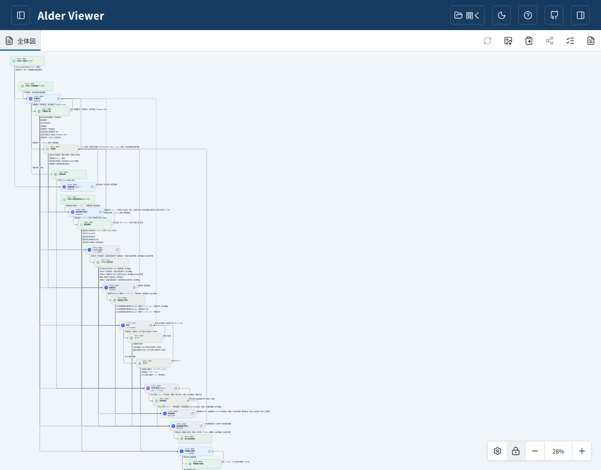
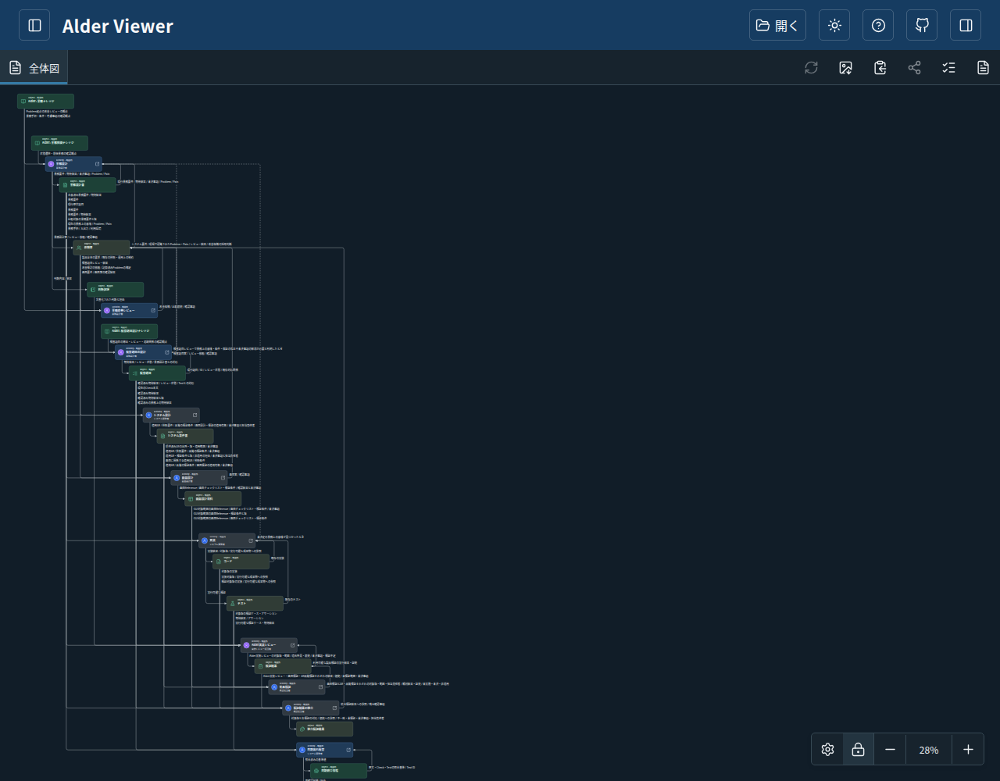
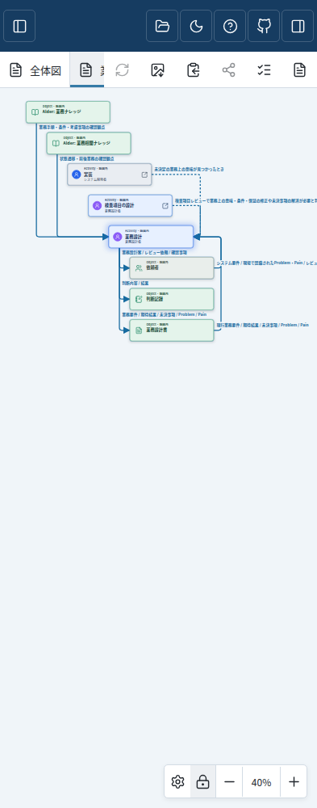
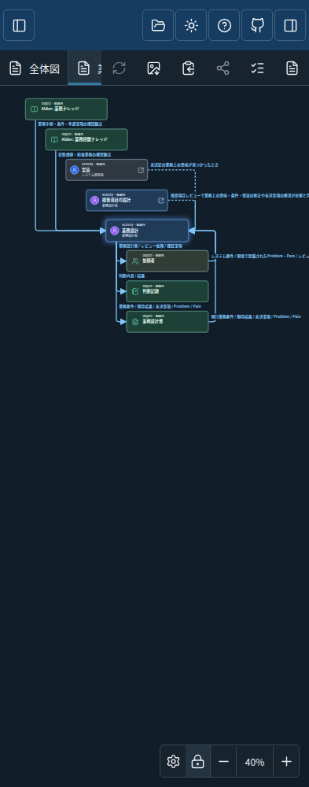
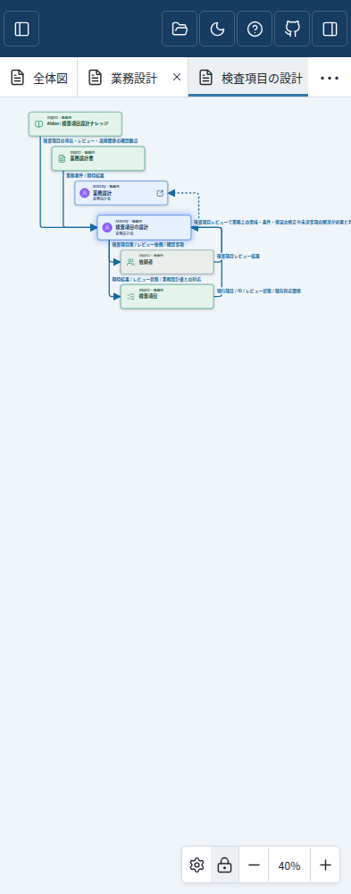
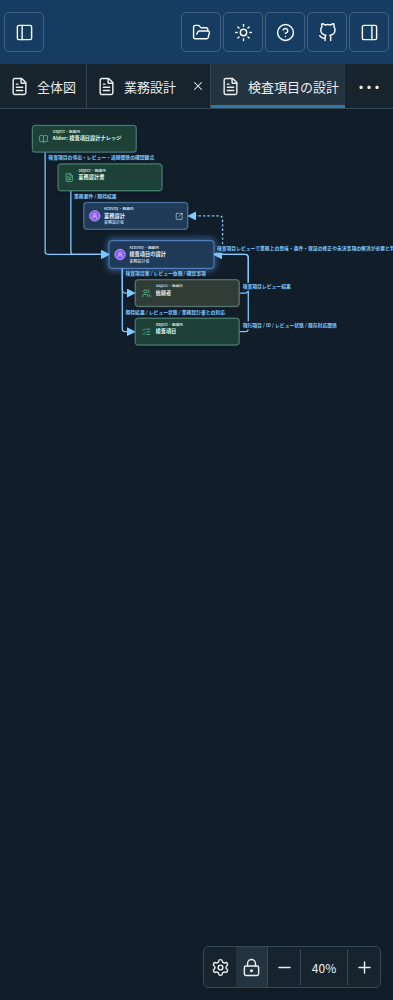

版 1c2356b230f237732a0e8488aeffd12db9dc446f。承認済み試作の全25ノードの配置を維持し、通常は固定L字、例外・循環は右側の折り返しで表示します。保存済み座標は移行しません。以前の配置で開いた場合は、表示設定の「レイアウトを初期値に戻す」で新配置を試せます。
全体図でObjectを選択して関連する線・説明を確認し、「業務設計」「検査項目の設計」の詳細タブも操作できます。配置ロックを外すとドラッグできます。共有Object付近の縦余白は試作を維持しています。
以下は同じ候補をCIのChromeで表示した実画像です。承認済み試作の画像も参照できます。





